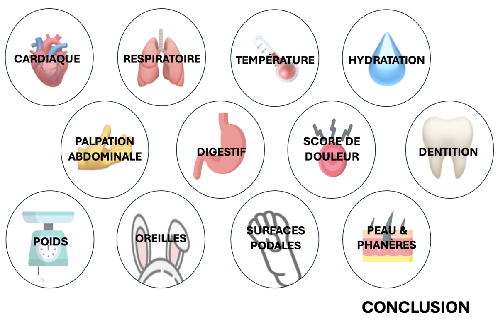

Examen clinique

Vous pouvez à partir de ce menu accéder à l'examen clinique de Globule en cliquant sur les douze thématiques ci dessus. Lorsque vous aurez toutes les informations dont vous avez besoin, cliquez sur « Conclusion » pour accéder à la suite.